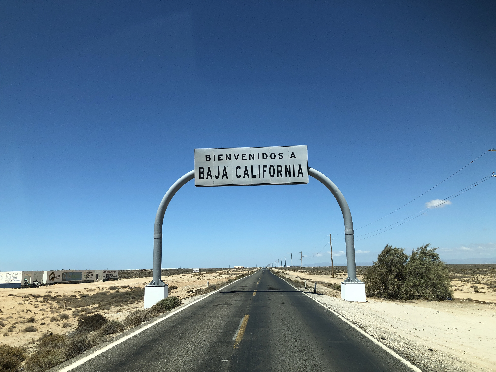

Challenge – Disease detectives: Modeling COVID-19


Cabe destacar el enclave histórico que es la frontera de uno de los estados mas jóvenes de méxico [1] con su vecino del norte
el cual es el estado mas rico de los Estados Unidos de América. [2]
La frontera de Tijuana es conocida mundialmente por ser la mas transitada de todo el planeta al año, superando a las ciudades de grandes urbes milenarias, sin embargo conociendo un poco la mezcla cultural que hay en el estado es entendible que
tanto mexicanos como estadounidenses cruzen a diario esta frontera, un ejemplo son los Tijuanenses que trabajan en la industria Californiana así como los traslados de ciudadanos estadounidenses que buscan un servicio médico mas barato en Mexicali.
La actual situación sanitaria ha traído consigo un fuerte impacto en el sector turístico de la zona fronteriza de Baja California. Esto debido a que el gobierno de los Estados Unidos decidió cerrar parcialmente (exeptuando a ciudadanos y residentes) la frontera el 21 de Marzo de 2020 .
Esto trajo consigo un impacto económico en la ciudades de Tijuana y Mexicali principalmente así como a sus respectivos vecinos.
Sin duda es un hecho necesario que se reactive el cruce fronterizo así como la economía en ambos países tal como lo dice el Coordinador General de Foro de Turismo y Migración, Carlos Mora Álvarez de BC. El turismo en el país alcanzó practicamente tasa 0%.
Tambien dijo que: "Como el sector(turístico) fue primario en afectarse económicamente también será el primero en recuperarse."
Analizando los datos de BC [3], se puede notar ciertos efectos de eventos sociales que impactaron incluso en mayor medida incluso que decisiones políticas a la propagación del virus.
En la figura se puede observar los casos confirmados de BC con datos obtenidos de la pagina de gobierno acerca de coronavirus hasta 12 de agosto, y estos datos se analizaron en matlab. [4]
La línea verde denota la fecha cuando se instauró la sana distancia y con un desfase de 2 días del cierre de fronteras( 21 y 23 de marzo respectivamente), donde a simple vista se puede ver que la forma de onda de la gráfica sigue la misma tendencia.
Sin embargo cuando nos acercamos a la línea negra la cual demarca la muerte del estadounidense George Floyd a causa de la policía.[5]
La cual ocurrió el 25 de mayo de 2020, donde se puede observar la importante influencia americana en el estado, así como movimientos sociales que tienen influencia en la propagación de un virus.